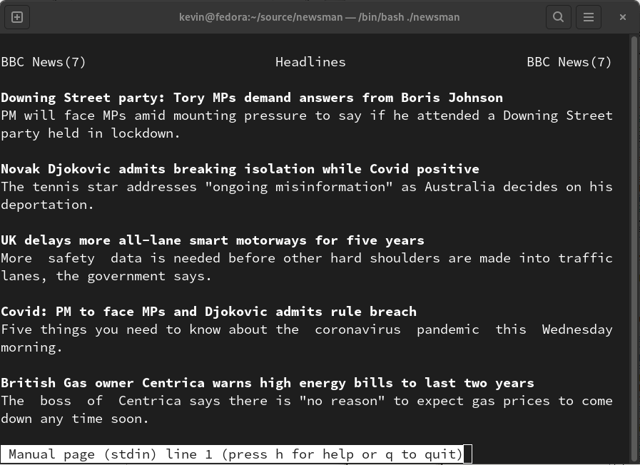

<!doctype html>
<html lang="en">
<head>
<meta charset="utf-8">
        <title>Kevin Boone: Command-line hacking: displaying news headlines in the manual viewer</title>
        <link rel="shortcut icon" href="https://kevinboone.me/img/favicon.ico">
        <meta name="msvalidate.01" content="894212EEB3A89CC8B4E92780079B68E9"/>
        <meta name="google-site-verification" content="DXS4cMAJ8VKUgK84_-dl0J1hJK9HQdYU4HtimSr_zLE" />
        <meta name="description" content="How to use tools like curl and xsltproc to retrieve    news headlines from the BBC, and display them using the manual viewer">
        <meta name="author" content="Kevin Boone">
        <meta name="viewport" content="width=device-width; initial-scale=1; maximum-scale=1">
        <link rel="stylesheet" href="css/main.css">
	<script>
          window.onclick = function(event)
            {
            var m = document.getElementById ("menu-button");
            if (m != event.target)
              {
              var c = document.getElementById ("menu-toggle");
              if (c.checked)
                m.style.backgroundImage = "url('img/close.png')";
              else
                m.style.backgroundImage = "url('img/hamburger.png')";
              }
            }
	</script>
</head>


<body>

<div id="myname">
Kevin Boone
</div>

<input id="menu-toggle" type="checkbox" />
<label class='menu-button-container' for="menu-toggle">
<div class='menu-button' id='menu-button'></div>
</label>
<ul id="menu">
 <li><a class="menu_entry" href="index.html">Home</a></li>
 <li><a class="menu_entry" href="contact.html">Contact</a></li>
 <li><a class="menu_entry" href="cv.html">CV</a></li>
 <li><a class="menu_entry" href="software.html">Software</a></li>
 <li><a class="menu_entry" href="articles.html">Articles</a></li>
 <li><span><form id="search_form" method="get" action="https://duckduckgo.com/" target="_blank"><input type="text" name="q" placeholder="Search" size="5" id="search_input" /><button type="submit" id="search_submit">&#128269;</button><input type="hidden" name="sites" value="kevinboone.me" /><input type="hidden" name="kn" value="1" /></form></span></li>
</ul>

<div id="content">


<h1>Command-line hacking: displaying news headlines in the manual viewer</h1>

<p>

In an <a href="clh_weather.html">earlier article in this series</a>, 
about doing (what I hope are) interesting and offbeat things with Linux command-line tools, I explained how to write a shell script that retrieves a 
weather forecast from the BBC,
and formats it for display in the console using brute-force application of 
tools like
<code>sed</code>. This article is somewhat similar, but takes a different
approach to processing the document. The data itself is similar to that
of the previous article -- it's
an XML RSS document -- but in this article I'll explain how to format
it using an XSLT stylesheet. This will require the use of the
<code>xsltproc</code> utility. This utility may not be part of a 
basic installation of Linux, but it's widely available in repositories.
</p>
<p>
The BBC news feeds are longer documents than the weather reports and,
to display them in a console, it's useful to use a pager that allows
page-up/page-down operations. Such things already exist, of course; but
in this case we need the page to accommodate lightly-formatted text, not
just plain text. The Linux manual viewer (<code>man</code>) already
handles this kind of operation, so it seemed sensible to turn the
news feed into a man page. The result looks something like this:
</p>



<h2>Prerequisites</h2>

<p>
To follow this example, you'll need <code>curl</code>, <code>sed</code>,
and <code>man</code>
(which are part of the base distribution for many Linux variants)
and <code>xmlproc</code> (which probably isn't). On Ubuntu and similar, 
you can get
<code>xmlproc</code> by running:
</p>

<pre class="codeblock">
$ sudo apt-get install xsltproc 
</pre>

<p>
Of course, you'll need Internet access to get to the news feeds.
</p>

<h2>Background</h2>

<p>
The BBC makes a number of news headline feeds available in RSS format.
RSS is nothing more than XML that follows particular structural conventions.
For the headline feeds, the XML looks like this:
</p>

<pre class="codeblock"><b><font color="#0000FF">&lt;rss&gt;</font></b>
  <b><font color="#0000FF">&lt;channel&gt;</font></b>
    <b><font color="#0000FF">&lt;item&gt;</font></b>
      <b><font color="#0000FF">&lt;title&gt;</font></b>Headline 1<b><font color="#0000FF">&lt;/title&gt;</font></b>
      <b><font color="#0000FF">&lt;description&gt;</font></b>Summary 1<b><font color="#0000FF">&lt;/description&gt;</font></b>
    <b><font color="#0000FF">&lt;/item&gt;</font></b>
    <b><font color="#0000FF">&lt;item&gt;</font></b>
      <b><font color="#0000FF">&lt;title&gt;</font></b>Headline 2<b><font color="#0000FF">&lt;/title&gt;</font></b>
      <b><font color="#0000FF">&lt;description&gt;</font></b>Summary 2<b><font color="#0000FF">&lt;/description&gt;</font></b>
    <b><font color="#0000FF">&lt;/item&gt;</font></b>
  <b><font color="#0000FF">&lt;/channel&gt;</font></b>
<b><font color="#0000FF">&lt;/rss&gt;</font></b>
</pre>

<p>
It's certainly possible to hack out the relevant bits of text from this
document using <code>sed</code>, but using a stylesheet transformation
is more elegant. More to the point, perhaps, the stylesheet is comprehensible.
If the BBC changes its format, it will be much easier to modify a stylesheet
than a heap of regular expressions.
</p>

<h2>Retrieving the feed</h2>

<p>
The BBC news feed URLs are of the form 
<code>http://feeds.bbci.co.uk/news/XXX/rss.xml</code>.
The "XXX" is a topic -- "world", "uk", "politics", etc. We can retrieve
the feed easily using <code>curl</code>, which will write to standard
output by default.
</p>

<h2>XSLT transformation</h2>

<p>
XSLT is an XML-based language for transformations of XML to another document:
maybe a different kind of XML, maybe something else entirely.
In this case, we'll use XSLT to transform an RSS document into a man
page.
</p>

<p>
The <code>xsltproc</code> utility takes an XML document and a stylesheet,
applies the latter to the former, and writes the output. To apply the
transformation to standard input, and write the result to standard output,
the invocation is simple:
</p>
<pre class="codeblock">
$ xsltproc - stylesheet.xslt
</pre>

<p>
Here is the (slightly simplified) 
stylesheet for this news headline example. Even if you're not
a regular XSLT user, it should make reasonable sense when compared to the
RSS XML sample above.
</p>

<pre class="codeblock"><b><font color="#0000FF">&lt;xsl:stylesheet</font></b> <font color="#009900">version</font><font color="#990000">=</font><font color="#FF0000">"1.0"</font>
        <font color="#009900">xmlns:xsl</font><font color="#990000">=</font><font color="#FF0000">"http://www.w3.org/1999/XSL/Transform"</font><b><font color="#0000FF">&gt;</font></b>
<b><font color="#0000FF">&lt;xsl:template</font></b> <font color="#009900">match</font><font color="#990000">=</font><font color="#FF0000">"/rss/channel"</font><b><font color="#0000FF">&gt;</font></b>
.TH "BBC News" "7" "" "" "Headlines"
  <b><font color="#0000FF">&lt;xsl:for-each</font></b> <font color="#009900">select</font><font color="#990000">=</font><font color="#FF0000">"item"</font><b><font color="#0000FF">&gt;</font></b>

\fB<b><font color="#0000FF">&lt;xsl:value-of</font></b> <font color="#009900">select</font><font color="#990000">=</font><font color="#FF0000">"title"</font><b><font color="#0000FF">/&gt;</font></b>\fR
.br
<b><font color="#0000FF">&lt;xsl:value-of</font></b> <font color="#009900">select</font><font color="#990000">=</font><font color="#FF0000">"description"</font><b><font color="#0000FF">/&gt;</font></b>

<b><font color="#0000FF">&lt;/xsl:for-each&gt;</font></b>

<b><font color="#0000FF">&lt;/xsl:template&gt;</font></b>
<b><font color="#0000FF">&lt;/xsl:stylesheet&gt;</font></b>
</pre>

<blockquote class="notebox"><b>Note:</b><br/>The whitespace in this document <i>is significant</i>. Whitespace will be written to the output document exactly as given, and is meaningful in a man page.</blockquote>

<p>
The stylesheet starts off by matching the <code>channel</code> element under the
<code>rss</code> element in the RSS document. If this pattern is found, the 
output beginning <code>.TH</code> will
be written. This is the man page header. In practice, we'll modify this
header at runtime, to display the title of the particular news feed, but that's
a subtlety that I won't elaborate on here.
</p>
<p>
Within the <code>/rss/channel/</code> section of the XML, 
the stylesheet then iterates
over all the <code>item</code> elements. For each it writes the text
supplied in the stylesheet, and substitutes the contents of the
<code>title</code> and <code>description</code> tags for each item.
The literal text that gets output contains man-page formatting
elements like <code>\fB</code> (bold). In this way the elements in
the RSS are transformed into paragraphs in a man page.
</p>

<h2>Handling the stylesheet</h2>
<p>
<code>xlstproc</code> can take its document from standard input and write
the result to standard output; but the stylesheet has to be provided in
a file. I don't want to have to install a separate file -- I just want
to put the entire program into a single shell script. So I have the script
write the stylesheet to a temporary file, then delete it when the
processing is done. Part of this process can involve making on-the-fly
transformations to the stylesheet (although few are done in this example).
</p>
<p>
A simple way to write out the stylesheet from the script is to use a 
"here document":
</p>
<pre class="codeblock">
cat << EOF > $XSLTFILE
<xsl:stylesheet version="1.0"
        xmlns:xsl="http://www.w3.org/1999/XSL/Transform">
...
EOF
</pre>
<p>
Everything between <code>cat</code> and <code>EOF</code> is written
to <code>$XSLTFILE</code>.
</p>

<h2>Using the man viewer</h2>
<p>
Linux users are familiar with running <code>man foo</code> to get the
manual page for <code>foo</code>. However, the man viewer is capable of
working on specific files or even, as in this case, on standard input.
</p>
<p>
So, having written out the stylesheet to a
temporary file, the complete command to display the news headlines is: 
</p>
<pre class="codeblock">
curl -s $FEED | xsltproc $XSLTFILE - | grep -v xml |  man -l -
</pre>

<p>
And that's it.
</p>

<h2>Further work</h2>
<p>
This application cries out for caching. The news headlines change only
infrequently, so the utility really ought to cache the RSS documents
in a handy directory, and use the cached versions if only a short
time has elapsed.
</p>
<p>
The approach described in this article will work on any conventional
RSS document, so it could easily be expanded to provide a general feed
viewer. Of course, such utilities already exist -- but they're typically
more complex than a few lines of shell script.
</p>

<h2>Download</h2>
<p>
If you're interested, the full source for <code>newsman</code> is available  
<a href="https://github.com/kevinboone/newsman" 
	target="_blank">from my GitHub repository</a>.


<p><span class="footer-clearance-para"/></p>
</div>

<div id="footer">
<a href="rss.html"></a>
Categories: <a href="Linux-groupindex.html">Linux</a>, <a href="command-line_hacking-groupindex.html">command-line hacking</a>

<span class="last-updated">Aug 04 2022
</span>
</div>

</body>
</html>


